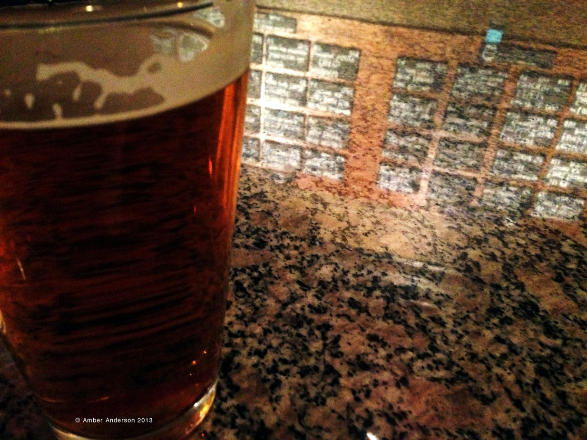
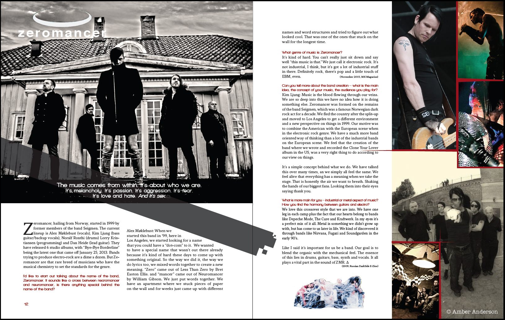

Hello and welcome.
My name is Amber Anderson and I'm a graphic designer currently located in Orange County, California.
Most robust in web development with skills that also include design, illustration, and photography.
BA in Visual Communication from Eastern Washington University.
Creator of the web comic called Dapper Immortal.
Me? Unashamed nerd. Former band geek that still has a love of music.
Table-top gamer and a chainmailler to boot.
PDF Resume available on Dropbox
PDF Portfolio Sample available on Dropbox
Where to find me elsewhere...


/* Illustration */
Vector illustration of Black Widow Steampunk motorcycle. [Adobe Illustrator]
Original web comic about a vampire stick figure named Dapper Immortal.
/* Photography */
HDR photography. Used Photoshop to converge the dark and light shots together, and turn it into a black and white photo.
Train tracks in Spokane Valley, WA. Used a chiffon cloth filter. Converted it to black and white with color added back in on the rails.
Looking at perspectives and reflections with a lager and beer list at a brewery.

/* Web Development */
Designed and developed the following website for a rad non-profit located in Spokane, WA.
Also designed and developed the following website for a nursery located in Washington.
/* Identity and Branding */
The Senior Capstone for my degree, the identity standard for a Spokane, WA animal shelter. This was a group project, and I was in charge of stationary.
/* Editorial Design */
A zine I created about the presence of gender in clothing marketing. Created it as final project for a 400-level class I studied for my Communications minor.
A magazine exercise I did for my senior portfolio class at university.
